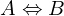
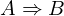
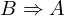
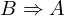
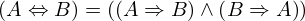
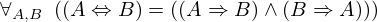

Show the Proof¶
In [1]:
import proveit
# Automation is not needed when only showing a stored proof:
proveit.defaults.automation = False # This will speed things up.
proveit.defaults.inline_pngs = False # Makes files smaller.
%show_proof
Out[1]:
| step type | requirements | statement | ||
|---|---|---|---|---|
| 0 | instantiation | 1, 2 |  ⊢  | |
 : , : ,  :  :  | ||||
| 1 | theorem | ⊢  | ||
| proveit.logic.booleans.conjunction.left_from_and | ||||
| 2 | instantiation | 3, 4, 5 | ⊢ | |
 : , : ,  : : | ||||
| 3 | theorem | ⊢  | ||
| proveit.logic.equality.rhs_via_equality | ||||
| 4 | assumption | ⊢ | ||
| 5 | instantiation | 6 | ⊢  | |
| : , : | ||||
| 6 | axiom | ⊢  | ||
| proveit.logic.booleans.implication.iff_def | ||||